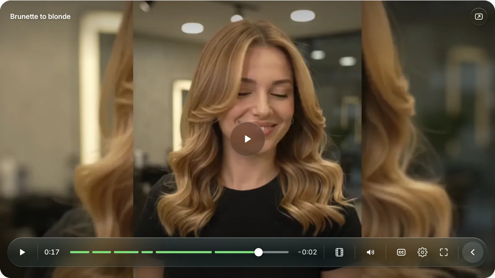
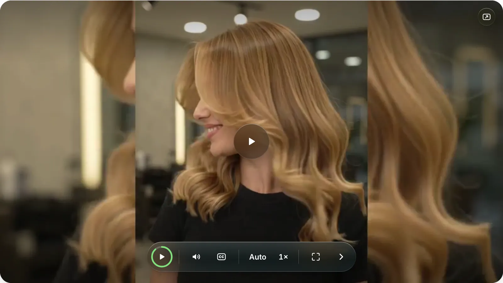
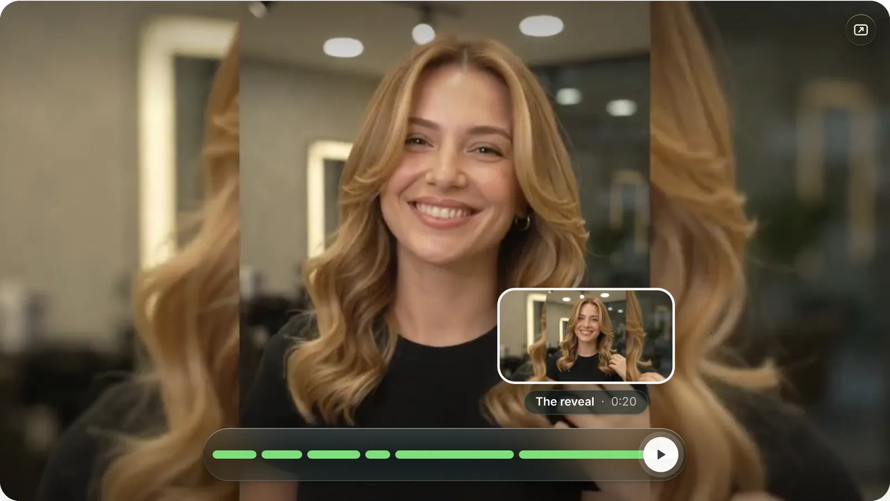
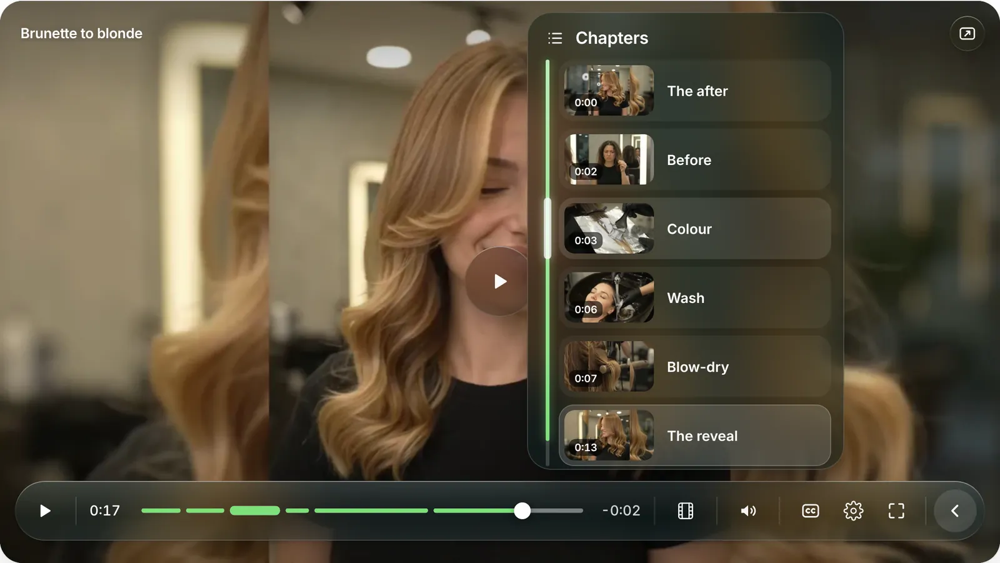
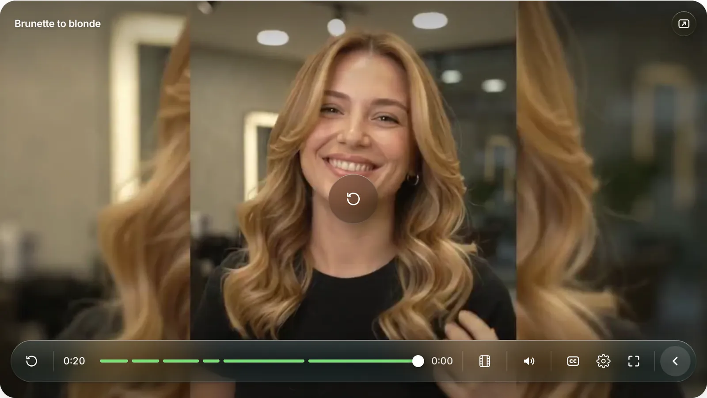
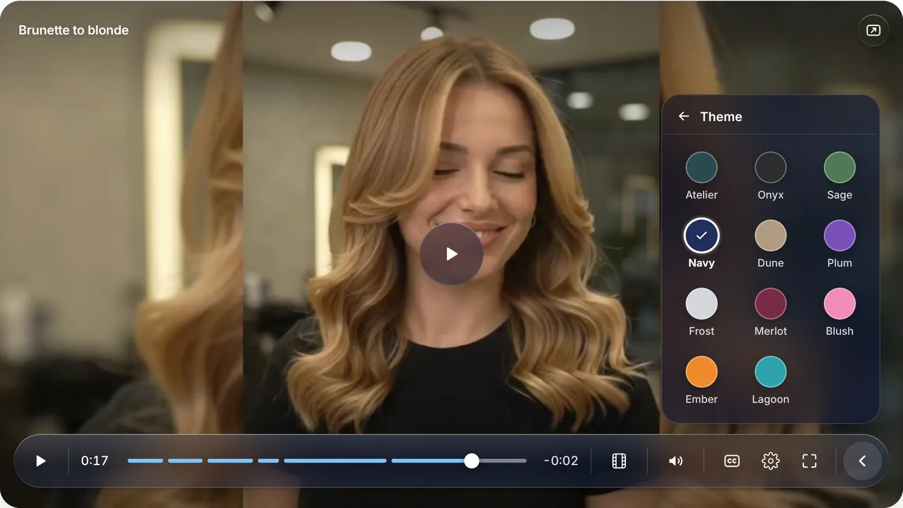
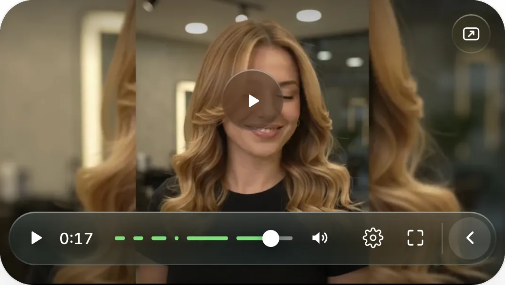
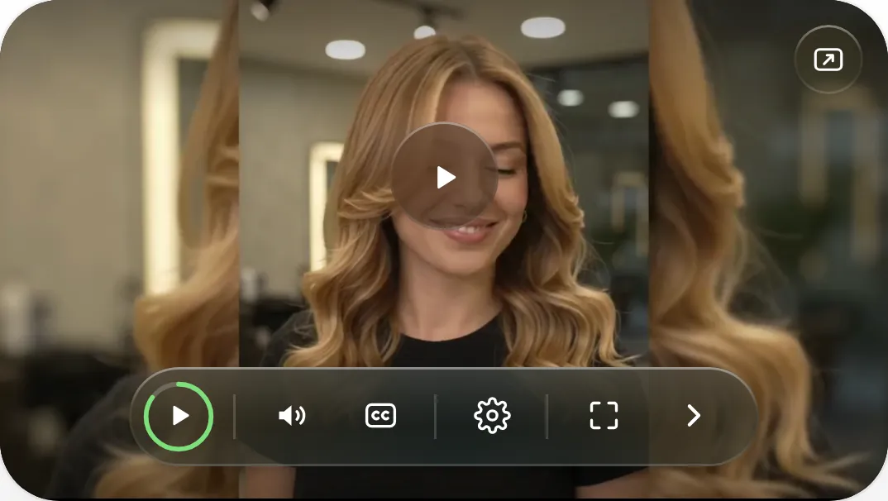

Atelier: a simple glass video player
A video player skin for Video.js v10 that stays out of the way. One clear glass bar when you need it, a small pill when you don't, and nothing between you and the video. Streams from Mux as adaptive HLS. I designed and built it end to end as a challenge entry.
One simple glass player, live as a demo. A clear bar with a chaptered timeline when you need it, and a small pill when you don’t.

Most players add noise on top of the video
Default players stack a dark gradient and a full-width bar over the bottom of the frame, often right where the subject is. On a phone that strip can cover a third of the picture, even when nobody is touching it.
Heavy bars and gradients sit on top of the video while nobody is using them.
Most videos have clear parts, yet the timeline is one undivided line, so jumping to a moment is guesswork.
The bar always sits in the same spot, even when it covers a face or the captions.
Settings menus show every option at once, so simple changes take more effort than they should.
One clear surface, three sizes
Atelier follows one rule: the video comes first. Controls live on a single piece of clear glass that appears when you reach for it and changes size with your intent. Anything not needed right now is removed or one step away.


Small choices that keep it clear
The timeline is split into named parts with a preview, so people can jump straight to the moment they want.
Quality and Speed show their current value. One tap opens a focused list instead of a crowded menu.
If the bar covers a face or the captions, drag it to the top or press T. Popovers and previews follow.
Atelier teal by default, plus ten tints in Settings. Every tint keeps the same contrast rules over bright and dark footage.



The same rules on a small screen
The layout responds to the player's own width, not the page, so it works in a feed, a sidebar or full screen. Touch targets grow on phones, and the pill keeps only what a thumb needs.


Clear for everyone, light to load
Every control works by keyboard, with visible focus and shortcuts such as D, T and arrow keys.
Captions stay readable on glass, and Reduce Motion turns movement into simple fades.
Video streams from Mux as adaptive HLS, loaded after the page, with a local MP4 fallback.
Simplicity is a lot of small decisions
Removing things was harder than adding them. Each control had to earn its place on the glass, and every animation had to help people understand what changed. Building it myself with an AI coding assistant let me test those decisions in a real, working player instead of a static mockup.
Demo footage is an AI-generated clip made with Google Gemini.